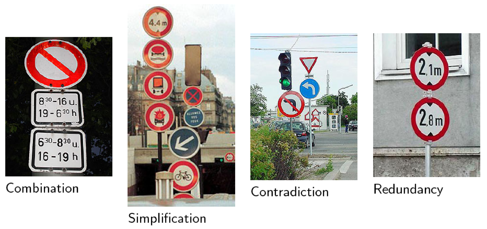
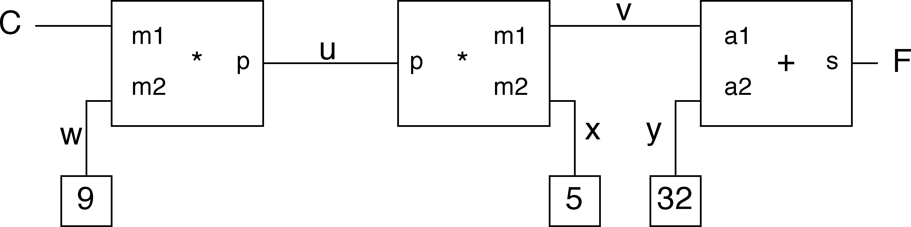
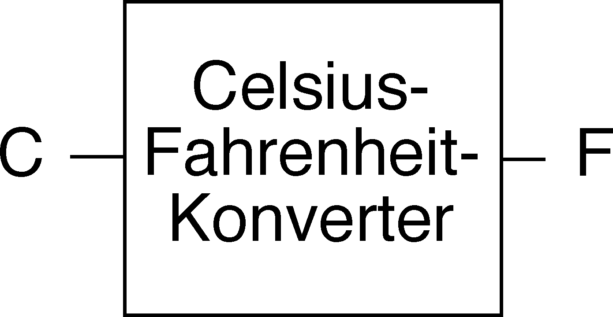

Constraint-Programmierung – Intuitive Einführung
Programmierparadigmen
Einstieg
Darstellungen angelehnt an Fruehwirth2010 und Sicp1999
Begriff
- Die Constraint-Programmierung wird meist als eine Spielart der logischen Programmierung angesehen.
- Der Begriff constraint bedeutet in etwa Bedingung, Einschränkung, (Regel?).
- Man könnte auch von regelbasierter Programmierung sprechen.
- Regeln können in verschiedenen Formen auftreten:
- funktional orientiert: mathematische Gleichungen; Beispiel: \(x-y=23\)
- logik-orientiert: logische Prädikate bzw. Wenn-dann-Regeln;
Beispiel:
Gesucht ist die Zahl \(x\), die ein Zahlenschloss mit den Ziffern 0
bis 9 öffnet. Wir wissen, dass \(x\)
- \(\geq 5\),
- eine Primzahl ist
- Regel: \(x\in {0, 1, \ldots , 9} \wedge x\geq 5 \wedge prime(x)\)
Prinzip
- In der regelbasierten Programmierung wird ein ein Satz von Regeln (constraints) angegeben, denen die Lösung genügen muss.
- Es wird kein Algorithmus formuliert, der die Lösung Schritt für Schritt ermittelt.
- Ein regelbasiertes Programmiersystem muss daher über einen eingebauten Lösungsalgorithmus (Constraint-Löser) verfügen.
- Dieser versucht – vereinfacht gesprochen – einen Weltzustand zu finden, in dem möglichst viele der angegebenen Regeln gleichzeitig erfüllt sind.
- Mit der Gleichung \(x-y=23\) als einziger Regel, wird der Constraint-Löser wohl sagen müssen, dass die Regel durch unendlich viele Belegungen von \(x\) und \(y\) erfüllt werden kann.
- Fügt man als zweite Regel \(2x + 13 = y\) hinzu, gibt es nur noch eine Lösung.
Anwendungen
- Verarbeitung natürlicher Sprachen
- Datenbanksysteme (Konsistenzsicherung)
- Operations Research (Optimierungsprobleme)
- Ökonomie (Optionshandel)
- Layout-Berechnung für integrierte Schaltungen
- Erstellung von Stundenplänen
- Entscheidungsunterstützungssysteme für Planung und Konfiguration
- Kommerzielle Anwendungsbeispiele nach Fruehwirth2010
- Lufthansa: Short-term staff planning.
- Renault: Short-term production planning.
- Nokia: Software configuration for mobile phones.
- Airbus: Cabin layout.
- Siemens: Circuit verification.
Contstraints im Straßenverkehr

Holy Grail of programming
Constraint Programming represents one of the closest approaches computer science has yet made to the Holy Grail of programming: the user states the problem, the computer solves it.
[E. Freuder]
Ein simples Constraint-propagation-system
- Von Regelfortpflanzung (constraint propagation) wurde erstmals im Programm Sketchpad Gebrauch gemacht, mit dessen Hilfe 1962 erstmals Grafiken auf einem Computer-Bildschirm gezeichnet werden konnten.
- Herkömmliche Programme (Funktionen) sind eindimensional, d. h. sie berechnen einen Wert in Abhängigkeit von ihre Eingangsgrößen (Argumenten).
- Regelfortpflanzung ermöglicht den Übergang von Funktionen zu Relationen.
Gleichungen
- Aus der Zinseszinsrechnung ist die folgende Gleichung bekannt: \[\frac{K_{n}}{K_{0}}=(1+\frac{p}{100})^{n}\]
- Sie beschreibt einen Zusammenhang von vier Größen.
- Sind drei Größen gegeben, kann die vierte berechnet werden.
- Mit den bekannten Mitteln der Programmierung ist es aber nicht möglich, die Gleichung und die Werte von drei Größen anzugeben, um den Wert der vierten zu bekommen.
- Stattdessen muss man für die Bestimmung jeder Größe eine eigene Prozedur (Funktion) schreiben.
Elementare Constraints
- Um mit Gleichungen (Relationen) direkt umgehen zu können, führen wir als Elemente einer constraint language primitive constraints ein.
- Jedes primitive constraint beschreibt einen Zusammenhang zwischen
Größen
(adder x y z)legt fest, dass für die Größen \(x\), \(y\) und \(z\) die Gleichung gilt: \(x+y=z\)- Entsprechend definiert
(multiplier x y z)die Gleichung \(xy=z\). - Schließlich drücken wir durch
(constant 2.718 x)aus, dass \(x\) den Wert \(2.718\) hat.
- Um komplexere Relationen ausdrücken zu können, können constraints durch Konnektoren verbunden werden.
- Ein Konnektor verwaltet einen Wert, der in mehreren constraints vorkommt.
Beispiel: Celsius-Fahrenheit-Konverter
- Zusammenhang zwischen Fahrenheit und Celsius: \[9C=5(F-32)\]
- Schaltbild aus Addierern, Multiplizierern und Konstanten:

- Die Buchstaben bezeichnen Konnektoren, die die Constraint-Elemente verbinden, bzw. die Verbindung zu den externen Anschlüssen herstellen.
- Die externen Anschlüsse (hier C und F) repräsentieren die Unbekannten aus der Gleichung.
- Anmerkung: Das Netzwerk ähnelt einem Programm für einen Analogrechner.
Berechnungsprozess
- Ein Konnektor erhält einen Wert (wird aktiviert) durch
- den Benutzer oder
- ein Constraint-Element, mit dem er verbunden ist.
- Wenn ein Konnektor einen Wert erhalten hat, aktiviert er alle verbundenen Constraint-Elemente – außer demjenigen, von dem er selbst aktiviert wurde.
- Ein aktiviertes Constraint-Element prüft alle mit ihm verbundenen Konnektoren daraufhin, ob genügend Informationen vorliegen, um ihm einen Wert zu geben.
- Wenn das der Fall ist, wird der Wert gesetzt, der Konnektor aktiviert usw.
- Im Celsius-Fahrenheit-Konverter erhalten die die Konnektoren w, x und y Werte durch die mit Ihnen verbundenen Konstanten.
- Die durch sie aktivierten Multiplzierer und der Addierer können nicht weiterarbeiten da ihnen Information fehlen.
- Erst wenn, C oder F durch den Benutzer einen Wert erhalten, wird ein Wert für F bzw. C berechnet.
Der Celsius-Fahrenheit-Konverter in Clojure
- Der Fahrenheit-Celsius-Konverter als black box:

in Clojure:
(def C (make-connector)) (def F (make-connector)) (celsius-fahrenheit-converter C F) ;=> ok
Die Prozedur
celsius-fahrenheit-converter(def celsius-fahrenheit-converter (fn [c f] (let [u (make-connector) v (make-connector) w (make-connector) x (make-connector) y (make-connector)] (multiplier c w u) (multiplier v x u) (adder v y f) (constant 9 w) (constant 5 x) (constant 32 y) 'ok)))
Anbringen von Messfühlern
Die Verknüpfung eines Konnektors mit einem Messfühler (probe) bewirkt, dass jedesmal, wenn der Konnektor einen Wert erhält, eine Nachricht ausgegeben wird.
(probe "Celsius temp" C) (probe "Fahrenheit temp" F)
Beispiel: Die Auswertung von
(set-value! C 25 'user)führt zu folgender Ausgabe:Probe: Celsius temp = 25 Probe: Fahrenheit temp = 77
- Der Messfühler an
Csorgt für die Ausgabe der Celsius-Temperatur. Die Wertzuweisung an den KonnektorCpflanzt sich durch das Netzwerk fort, wodurch der KonnektorFden Wert 77 erhält. Der Messfühler anFsorgt wiederum für die Ausgabe.
Der anschließende Versuch, einem Konnektor einen neuen Wert zu geben, schlägt fehl:
(set-value! F 212 'user) Unhandled java.lang.Exception Contradiction(77 212)
Vorher muss der Konnektor den alten Wert vergessen. Die Auswertung von
(forget-value! C 'user)ergibt:Probe: Celsius temp = ? Probe: Fahrenheit temp = ?
Jetzt kann
Fgesetzt werden:(set-value! F 212 'user) Probe: Fahrenheit temp = 212 Probe: Celsius temp = 100
- Die Änderung an
Fpflanzt sich „rückwärts” bis zuCfort. - Beachte: Dasselbe Netzwerk wird benutzt um
Fbei gegebenemCzu berechnen, und umgekehrt.
Implementierung des Constraint-Systems
Struktur des adder
(def adder (fn [a1 a2 sum] (letfn [(process-new-value [] ...) (process-forget-value [] ...) (me [request] (cond (= request 'I-have-a-value) (process-new-value) (= request 'I-lost-my-value) (process-forget-value) :else (throw (Exception. "Unknown request -- ADDER" request))))] (connect a1 me) (connect a2 me) (connect sum me) me)))
adderist als Prozedur mit lokalem Zustand definiert.- Sie liefert die lokale Prozedur
meals Wert zurück. - Ein
adderbesitzt die Konnektorena1,a2undsum. adderbesitzt zwei weitere lokale Hilfsfunktionen:process-new-valueprocess-forget-value,
die weiter unten definiert werden.
- Auf den folgenden Folien werden zunächst Basisoperationen für Konnektoren definiert.
Basisoperationen für Konnektoren
;; has-value?: connector -> boolean ;; sagt, ob Konnektor einen Wert hat (def has-value? (fn [connector] (connector 'has-value?))) ;; get-value: connector -> any ;; liefert den Wert eines Konnektors (def get-value (fn [connector] @(connector 'value)))
;; set-value!: connector any constraint -> unspecified ;; zeigt an, dass ein constraint den Wert eines Konnektors ;; setzen will (def set-value! (fn [connector new-value informant] ((connector 'set-value!) new-value informant))) ;; forget-value!: connector constraint -> unspecified ;; zeigt an, dass ein constraint den Wert eines Konnektors ;; vergessen machen will (def forget-value! (fn [connector retractor] ((connector 'forget) retractor))) ;; connect: connector constraint -> ? ;; verbindet einen Konnektor mit einem neuen constraint (def connect (fn [connector new-constraint] ((connector 'connect) new-constraint)))
Lokale Hilfsfunktionen für adder
(process-new-value [] (cond (and (has-value? a1) (has-value? a2)) (set-value! sum (+ (get-value a1) (get-value a2)) me) (and (has-value? a1) (has-value? sum)) (set-value! a2 (- (get-value sum) (get-value a1)) me) (and (has-value? a2) (has-value? sum)) (set-value! a1 (- (get-value sum) (get-value a2)) me)))
(process-forget-value [] (forget-value! sum me) (forget-value! a1 me) (forget-value! a2 me) (process-new-value))
Struktur des multiplier
(def multiplier (fn [m1 m2 product] (letfn [(process-new-value [] ...) (process-forget-value [] ...) (me [request] (cond (= request 'I-have-a-value) (process-new-value) (= request 'I-lost-my-value) (process-forget-value) :else (throw (Exception. "Unknown request -- MULTIPLIER" request))))] (connect m1 me) (connect m2 me) (connect product me) me)))
Lokale Hilfsfunktionen für multiplier
(process-new-value [] (cond (or (and (has-value? m1) (= (get-value m1) 0)) (and (has-value? m2) (= (get-value m2) 0))) (set-value! product 0 me) (and (has-value? m1) (has-value? m2)) (set-value! product (* (get-value m1) (get-value m2)) me) (and (has-value? product) (has-value? m1)) (set-value! m2 (/ (get-value product) (get-value m1)) me) (and (has-value? product) (has-value? m2)) (set-value! m1 (/ (get-value product) (get-value m2)) me)))
(process-forget-value [] (forget-value! product me) (forget-value! m1 me) (forget-value! m2 me) (process-new-value))
Der Konstantenerzeuger
(def constant (fn [value connector] (letfn [(me [request] (throw (Exception. "Unknown request -- CONSTANT" request)))] (connect connector me) (set-value! connector value me) me)))
- setzt den Wert des angegebenen Konnektors.
- Nachrichten
I-have-a-valueoderI-lost-my-valuesind unzulässig.
Der Messfühler
Der Messfühler gibt beim Setzen bzw. Vergessen des Wertes des mit ihm verbundenen Konnektors einen Text aus.
(def probe (fn [name connector] (letfn [(print-probe [value] (println "Probe: " name " = " value)) (process-new-value [] (print-probe (get-value connector))) (process-forget-value [] (print-probe "?")) (me [request] (cond (= request 'I-have-a-value) (process-new-value) (= request 'I-lost-my-value) (process-forget-value) :else (throw (Exception. "Unknown request -- PROBE" request))))] (connect connector me) me)))
Konnektoren
Ein Konnektor wird als Prozedur mit drei lokalen Zustandsvariablen und vier lokalen Prozeduren definiert:
(def make-connector (fn [] (let [value (atom false) informant (atom false) constraints (atom '())] (letfn [ ... ] me))))
- value
- repäsentiert den aktuellen Wert des Konnektors,
- informant
- repräsentiert das Objekt, das den Wert gesetzt hat,
- constraints
- enthält die Liste der Constraint-Elemente, mit denen der Konnektor verbunden ist und die bei Änderungen seines Wertes informiert werden müssen.
make-connector -- set-my-value
(set-my-value [newval setter] (cond (not (has-value? me)) (do (reset! value newval) (reset! informant setter) (for-each-except setter inform-about-value constraints)) (not (= @value newval)) (throw (Exception. (str "Contradiction" (list @value newval)))) :else 'ignored))
- Wird aufgerufen, wenn der Wert des Konnektors gesetzt werden soll.
- Wenn der Konnektor noch keinen Wert besitzt, wird er gesetzt und der Informant vermerkt.
- In diesem Fall werden alle verbundenen Constraint-Elemente (mit Ausnahme des Informanten) darüber informiert.
make-connector -- forget-my-value
(forget-my-value [retractor] (if (= retractor @informant) (do (reset! informant false) (for-each-except retractor inform-about-no-value constraints)) 'ignored))
- Wird aufgerufen, wenn ein der Wert des Konnektors vergessen werden soll.
- Hier wird geprüft, ob diese Anforderung von demselben Objekt stammt, das das Setzen des Wertes angefordert hat.
- In diesem Fall werden alle verbundenen Constraint-Elemente (mit Ausnahme des Informanten) darüber informiert.
make-connector -- connect
(connect [new-constraint] (if (not (in? @constraints new-constraint )) (swap! constraints conj new-constraint)) (if (has-value? me) (inform-about-value new-constraint)) 'done)
- fügt, das neue Constraint-Element der Liste der verbundenen Constraint-Elemente hinzu, falls es dort noch nicht enthalten ist.
- Wenn der Konnektor einen Wert besitzt, wird das neue Constraint-Element darüber informiert.
make-connector -- me
(me [request] (cond (= request 'has-value?) (if @informant true false) (= request 'value) value (= request 'set-value!) set-my-value (= request 'forget) forget-my-value (= request 'connect) connect :else (throw (Exception. "Unknown operation -- CONNECTOR" request))))
- Dient als Verteiler für die anderen lokalen Prozduren.
Hilfsprozeduren
- Es fehlen jetzt noch die Prozeduren:
for-each-exceptinform-about-valueinform-about-no-value
Iterator for-each-except
(def for-each-except (fn [exception procedure list] (letfn [(loop [items] (cond (empty? items) 'done (= (first items) exception) (loop (rest items)) :else (do (procedure (first items)) (loop (rest items)))))] (loop @list)))
- Führt auf allen Elementen einer Liste die Prozedur
procedureaus, mit Ausnahme des Elementsexception.
inform-about-…
(def inform-about-value (fn [constraint] (constraint 'I-have-a-value))) (def inform-about-no-value (fn [constraint] (constraint 'I-lost-my-value)))
- Dienen lediglioch der besseren Lesbarkeit des Programms.
- „Syntaktische” Prozeduren